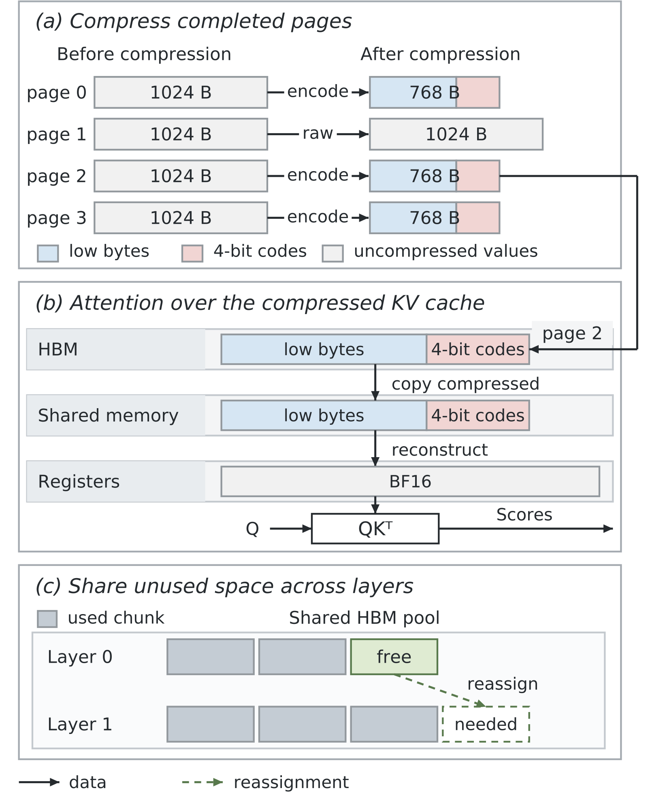
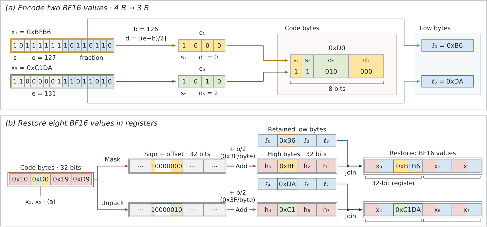

目录 · 9 节
1它到底在解决什么问题？2整体流程3压缩格式：只动指数，不动尾数4在寄存器里还原：一次加法还原四个数5显存管理：省下的空间要真的用起来6实验结果7我认为它的局限8一个推理服务团队可以怎么试9一句话结论无损压缩 KV cache 以前主要用来省传输：搬之前压缩，搬到显卡上再解压成原样给注意力读。ZipFusion 的判断是，解压这一步把好处吃掉了一大半，所以干脆让注意力直接读压缩后的数据，在寄存器里用几条整数位运算还原出原值。数据格式和注意力算子一起设计，再把省下的显存交给调度器多收请求。在 H100 上，注意力算子比 FlashInfer 快约 1.25 倍；8K 上下文下，同样显存里整机解码吞吐比不压缩的 SGLang 高 26.3%，是此前最好的无损压缩方案的 2.76 倍，而且结果逐位一致。
做大模型推理服务、尤其是对精度零容忍的团队值得读，原因是它说明了一件事：无损压缩不只能省带宽，也能直接让解码变快，前提是不要另起一步解压。核心思想一句话：只压缩指数位、保留尾数原样，让还原便宜到能塞进注意力算子里。不过它的压缩上限只有 25%（一块最多缩到原来的 75%），只在一张 H100、两个 8B 模型、8K 固定提示词上测过，更适合当一个可叠加的优化。
它到底在解决什么问题？
先看为什么"先解压再算"不划算（示意场景，数字取自论文图 1 的测量条件）。用 Llama 3.1 8B、每批 32 条、每条 2048 个输入 token 跑解码，把三种现成的无损压缩方案接进 SGLang，每一步都先把一层的缓存解压到缓冲区，再交给注意力算子。
| 示意场景 | 每步解压耗时 | 其余耗时 | 解压占比 |
|---|---|---|---|
| 三种现成无损方案 | 5.3–30.8 毫秒 | 约 10.9 毫秒 | 32.7%–73.8% |
| 不压缩 | 0 | 约 10.9 毫秒 | 0 |
| ZipFusion（目标） | 并入注意力 | 少读字节 | 不再单独存在 |
这说明解压不是一笔小账：最好的情况也占解码时间的三分之一。更麻烦的是，解压完注意力读的仍是原尺寸数据，每一步重复读取的字节一点没少，还要额外占一块显存放解压结果。而 KV cache 写一次、之后每一步解码都要读，所以如果能一直保持压缩状态去读，一次压缩就能在后面很多步里反复受益。
作者选无损而不是量化，是因为已有研究发现，在长上下文检索和问答任务上，多数模型对 KV cache 量化比对权重量化更敏感。对要求结果与原模型完全一致的部署，无损是唯一选择。
整体流程

系统分三部分，从下往上看：
- 压缩格式。 KV cache 按页组织，每页 16 个 token。页写满后，按每 512 个数一块独立压缩；满足条件的块缩到 75%，不满足的原样保留。还没写满的页不压缩，新生成的 token 可以直接追加。
- 注意力算子。 算子从显存把块搬进片上共享内存，搬的过程中保持压缩；每个线程取出自己负责的 8 个数，在寄存器里还原后马上送进矩阵乘法单元，结果不写回显存。
- 显存管理。 压缩后空出的显存块可以在层与层之间重新分配；分配器实时算出"还能放多少新页"，交给调度器决定能多收几个请求，同时给正在生成的请求留出增长空间。
压缩格式：只动指数，不动尾数
为什么只压指数？BF16（一种 16 位浮点格式）每个数由 1 位符号、8 位指数、7 位尾数组成。同一块里的数大小往往差不多，所以指数集中在一个小范围里，有压缩空间；尾数则接近随机，很难压。
具体做法是：先找出块内最小的指数，向下取到偶数，作为基准 b。如果块内所有指数都落在 b 到 b+15 之间，这块就压缩，否则不压。压缩时，每个数的低 8 位原样保留，这 8 位正好包含 7 位尾数和指数的最低位。剩下要存的只有符号位和指数偏移的高 3 位（记作 d，等于偏移除以 2 取整），凑成 4 位编码。这样每个数从 16 位变成 8+4=12 位，正好是 75%。
用一个算例走一遍。某块的指数范围是 120 到 133，基准取 b=120。块里有一个数指数是 127，偏移是 7，二进制 0111：最低位 1 已经在保留的低 8 位里，只需额外存高 3 位 011，也就是 3。这里 d=3。还原时把 d 乘 2 加上 b，再加上低 8 位里那个最低位 1，得到 120+6+1=127，和原值完全一样。整个过程只有整数加法和移位，不涉及浮点运算，所以不会有舍入误差。
为了让注意力算子找到每块数据，每页还要存一点元数据，开销很小。以一页 16 个 token、头维度 128 为例，每个头的键和值各切成 4 块；4 个键块合用 8 字节，4 个值块另用 8 字节。这 8 字节里，一半记第一块的起始位置，另一半每块占 1 字节，要么标记"未压缩"，要么记下基准的一半 b/2。所以算子能知道每块是原尺寸还是 75%，把前面各块大小累加就能定位下一块。
在寄存器里还原：一次加法还原四个数

还原必须足够便宜，否则省下的读取时间会被计算抵掉。作者的办法是让数据排布直接迎合硬件。GPU 的矩阵乘法指令要求每个线程手里拿着特定的 8 个元素，于是写缓存时就把同一线程要用的 8 个元素放在一起；键和值在两次矩阵乘法里角色不同，所以排布也各自设计。
每个线程读 8 个低字节和 4 个编码字节。关键观察是：BF16 的高字节等于"符号位 ×128 + 指数的高 7 位"，而指数的高 7 位正好等于 b/2 + d。所以只要把符号放在第 7 位、偏移 d 放在第 0–2 位，再加上 b/2，就直接得到高字节。4 位编码因此两两打包：一个字节里，第 1 个数的符号放第 7 位、偏移放第 0–2 位；第 5 个数的符号放第 6 位、偏移放第 3–5 位。线程把 4 个编码字节当成一个 32 位整数，一路用掩码只保留每字节的第 7 位和第 0–2 位，得到前 4 个数的编码；另一路用移位和掩码把中间 4 位挪到同样的位置，得到后 4 个数的编码。两路各加上一个每字节都是 b/2 的常数，一次加法还原 4 个高字节。以论文的例子说明：编码字节是 0xD0，b/2=63，第 1 个数符号为 1、偏移 0，高字节是 128+63+0=0xBF；第 5 个数符号为 1、偏移 2，高字节是 128+63+2=0xC1。因为 b/2+d 不超过 127，加法不会进位到符号位或相邻字节。8 个数只需两次加法，加上几条拼接指令，就能直接送进矩阵乘法单元。
显存管理：省下的空间要真的用起来
压缩省出的显存如果不交给调度器，就只是闲着。难点在于这块空间是动态的：新页写满后被压缩会释放空间，正在生成的请求又会不断申请新页。
作者的处理有三点。第一，新页总是按未压缩大小申请，因为它得先能接受写入，写满才压缩。第二，压缩后的页可能搬到新位置，用一张查找表把页编号映射到当前位置，页编号本身不变。第三，每层有自己的私有空间，另有一个共享池；某层的一块空间完全空出来、且没有正在进行的读取时，就还给共享池，可以分给别的层。分配器据此算出所有层都还能容纳多少新页，调度器按这个数字收新请求。
举个例子说明为什么要跨层共享：一个新请求的每一页，在每一层都要占一份空间，所以能收多少请求取决于最紧张的那一层。如果第 0 层因为数据好压省出了一大块，第 1 层却几乎压不动，没有共享池的话，第 0 层省下的空间就只能闲着；有了共享池，这块空间可以挪给第 1 层，整体能放下的页数才真正增加。
实验结果
测试在一张 80 GB 显存的 H100 上进行，模型是 Llama 3.1 8B 和 Qwen3-8B，每条请求 8192 个输入 token、生成 256 个 token，所有方法在相同显存预算下比较，并逐位验证还原结果。
| 指标 | 对照 | ZipFusion | 说明 |
|---|---|---|---|
| 注意力延迟（8K，每批 64，Llama） | FlashInfer 704.6 微秒 | 562.7 微秒 | 快约 1.25 倍，已含还原 |
| 吞吐（每批 32，Llama） | 不压缩 SGLang | 每秒 2044 个 token | 高 15.3% |
| 同批次对比最快的无损方案 | SplitZip | 2.51 倍 | 省掉独立解压 |
| 最大批次（Llama） | 46 条 | 57 条 | 省下的显存多放请求 |
| 最大批次下吞吐 | 不压缩 SGLang | 每秒 2453 个 token | 高 26.3% |
这说明收益来自两处叠加。同样批次下，和不压缩的 SGLang 比，注意力每步少读了字节，所以快了约 15%；和其他无损方案比，又省掉了单独解压那一步，所以差距拉到 2.5 倍以上。显存省下来后能多放约 24% 的请求，两者合起来在最大批次下提升 26.3%。Qwen3-8B 上的数字几乎一样（批次从 40 增到 50，吞吐高 25.8%），说明效果不依赖某个特定模型。
与另一些方案对比也有启发：一项把权重解压和矩阵乘法融合的工作曾报告，在 A100 和 H800 上还原开销会抵消带宽节省；ZipFusion 在 H100 上取得了净收益，说明还原指令设计得够轻。
我认为它的局限
- 压缩上限低。 一块最多缩到 75%，指数分布散的块还压不了，因此单靠它省不了太多显存；最大批次只从 46 增到 57，就是这个上限的体现。它更像是可以和其他优化叠加的一层，而不是主力压缩手段。
- 测试条件窄。 只有一张 H100、两个 8B 模型、BF16 格式，输入是固定的 8192 token 文章，而且提示词部分是预先压好的，计时也不含预填充和首次压缩。换成更长上下文、多卡部署或真实请求分布，收益可能不同。
- 生成阶段的压缩没测。 设计上页写满就能压缩，但实验里所有方法新生成的缓存都保持不压缩，只有预先压好的 8192 token 提示词部分是压缩的。对输出很长的推理型请求，生成部分会占缓存的大头，在线压缩的额外开销和收益都还需要自己测。
一个推理服务团队可以怎么试
- 先测自家缓存的指数分布。 抽样导出线上模型的 KV cache，按 512 个数一块统计有多少块的指数跨度不超过 16，这决定了实际能省多少。
- 在单卡上复现算子收益。 用固定上下文长度和批次跑注意力延迟对比，确认在自己的显卡型号上还原开销确实小于读取节省。
- 接入调度看并发。 让分配器把压缩省出的空间报给调度器，测同样显存下的最大批次和吞吐，并检查长输出请求下的收益衰减。
- 与量化方案并行评估。 如果业务能接受轻微精度损失，同时测一组量化方案，看两者是否可以叠加，再决定上线组合。
一句话结论
| 维度 | 评价 |
|---|---|
| 问题价值 | 中高，对精度零容忍的推理服务很实用 |
| 方法新意 | 中，格式与算子联合设计，位运算还原很巧 |
| 证据强度 | 中，测量细致但只有单卡、两个 8B 模型 |
| 落地难度 | 中，要改注意力算子和分配器，代码基于主流框架 |
| 适合谁 | 运行 SGLang 等框架、受显存和带宽双重限制的团队 |
ZipFusion 证明了无损压缩也能让解码变快，关键是别单独解压；上限只有 25%，适合作为叠加在其他优化之上的一层。
读完这篇，你觉得
夜读鸮记下了，谢谢你的反馈。
点一下即可，无需登录；再点一次撤回。只统计匿名次数，不记录你是谁。
讨论
欢迎补充实验细节、复现经验或不同看法。需 GitHub 登录。
正在加载讨论…